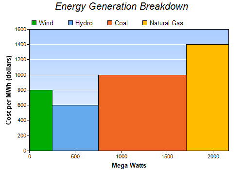

This example demonstrates a bar chart with variable bar widths.
ChartDirector does not really have a bar layer for variable width bars. However, an area layer can be used to create the same effect.
The variable width bars in this example are actually 4 areas, created by 4 area layers. The data set for each area layer consists of 4 points for the 4 corners of a bar.
The following is the command line version of the code in "cppdemo/varwidthbar". The MFC version of the code is in "mfcdemo/mfcdemo". The Qt Widgets version of the code is in "qtdemo/qtdemo". The QML/Qt Quick version of the code is in "qmldemo/qmldemo".
#include "chartdir.h"
int main(int argc, char *argv[])
{
// The data for the chart
double data[] = {800, 600, 1000, 1400};
const int data_size = (int)(sizeof(data)/sizeof(*data));
double widths[] = {250, 500, 960, 460};
const int widths_size = (int)(sizeof(widths)/sizeof(*widths));
const char* labels[] = {"Wind", "Hydro", "Coal", "Natural Gas"};
const int labels_size = (int)(sizeof(labels)/sizeof(*labels));
// The colors to use
int colors[] = {0x00aa00, 0x66aaee, 0xee6622, 0xffbb00};
const int colors_size = (int)(sizeof(colors)/sizeof(*colors));
// Create a XYChart object of size 500 x 350 pixels
XYChart* c = new XYChart(500, 350);
// Add a title to the chart using 15pt Arial Italic font
c->addTitle("Energy Generation Breakdown", "Arial Italic", 15);
// Set the plotarea at (60, 60) and of (chart_width - 90) x (chart_height - 100) in size. Use a
// vertical gradient color from light blue (f9f9ff) to sky blue (aaccff) as background. Set grid
// lines to white (ffffff).
int plotAreaBgColor = c->linearGradientColor(0, 60, 0, c->getHeight() - 40, 0xaaccff, 0xf9fcff);
c->setPlotArea(60, 60, c->getWidth() - 90, c->getHeight() - 100, plotAreaBgColor, -1, -1,
0xffffff);
// Add a legend box at (50, 30) using horizontal layout and transparent background.
c->addLegend(55, 30, false)->setBackground(Chart::Transparent);
// Add titles to x/y axes with 10 points Arial Bold font
c->xAxis()->setTitle("Mega Watts", "Arial Bold", 10);
c->yAxis()->setTitle("Cost per MWh (dollars)", "Arial Bold", 10);
// Set the x axis rounding to false, so that the x-axis will fit the data exactly
c->xAxis()->setRounding(false, false);
// In ChartDirector, there is no bar layer that can have variable bar widths, but you may create
// a bar using an area layer. (A bar can be considered as the area under a rectangular outline.)
// So by using a loop to create one bar per area layer, we can achieve a variable width bar
// chart.
// starting position of current bar
double currentX = 0;
for(int i = 0; i < data_size; ++i) {
// ending position of current bar
double nextX = currentX + widths[i];
// outline of the bar
double dataX[] = {currentX, currentX, nextX, nextX};
const int dataX_size = (int)(sizeof(dataX)/sizeof(*dataX));
double dataY[] = {0, data[i], data[i], 0};
const int dataY_size = (int)(sizeof(dataY)/sizeof(*dataY));
// create the area layer to fill the bar
AreaLayer* layer = c->addAreaLayer(DoubleArray(dataY, dataY_size), colors[i], labels[i]);
layer->setXData(DoubleArray(dataX, dataX_size));
// the ending position becomes the starting position of the next bar
currentX = nextX;
}
// Output the chart
c->makeChart("varwidthbar.png");
//free up resources
delete c;
return 0;
}
© 2023 Advanced Software Engineering Limited. All rights reserved.